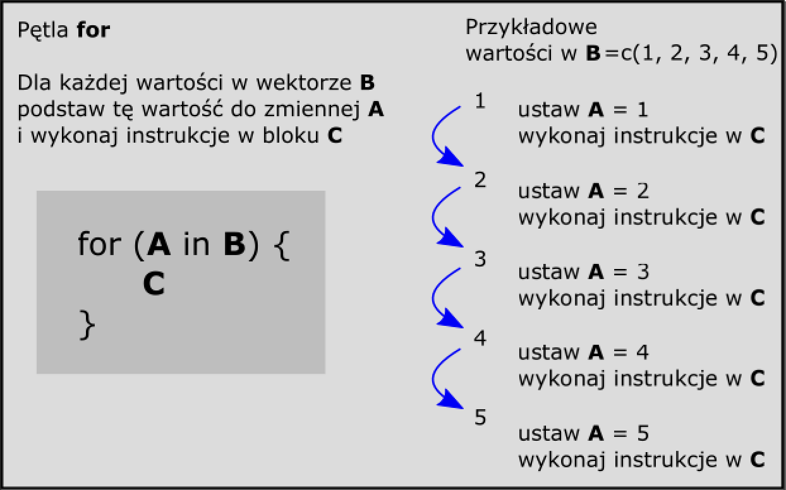

Rozdział 6 Pętle
Niewątpliwą przewagą R nad typową pracą w arkuszach kalkulacyjnych (lub innych “klikanych” programach) jest możliwość automatyzacji przetwarzania danych poprzez wykorzystanie pętli programistycznych.
Często zdarza się, że chcemy wykonać jakąś operację więcej niż raz, zmieniając tylko fragmentarycznie zakres naszego postępowania. Przykładowo, możemy chcieć wykonać oddzielne wykresy dla każdej kolumny, rzędu, policzyć ustalone statystyki dla wszystkich plików znajdujących się w naszym katalogu roboczym, itp.
Rozwiązaniem w takich przypadkach jest pętla programistyczna pozwalająca na cykliczne uruchamianie zdefiniowanego ciągu instrukcji, np. określoną liczbę razy lub do momentu wystąpienia pewnych warunków. W ten sposób komputer będzie mógł wykorzystać swoją najmocniejszą stronę - wielokrotnie powtarzać przekazane zadanie (Biecek 2016), które człowiekowi mogłoby zająć kilka żyć.
W R, jak w każdym dojrzałym języku programowania, dostępnych jest kilka rodzajów pętli programistycznych: repeat, while oraz for (Gągolewski 2016). Ze względu na specyfikę naszego kursu skoncentrujemy się na tych dwóch ostatnich, które są najczęściej stosowane w praktyce.
6.1 Pętla for
Najpopularniejsza pętla w językach programowanie to tzw. pętla for. Pozwala ona na podstawienie za każdym razem dowolnie zdefiniowanych wartości do zmiennej podczas uruchamiania określonego bloku kodu. Choć brzmi to dość skomplikowanie poniższy przykład pokaże istotę zagadnienia.
Weźmy najprostszą funkcję, np. print(), której zadaniem jest wyświetlenie zawartości argumentu umieszczonego w nawiasie. Jeśli chcemy wyświetlić za pomocą tej funkcji (w kolejnych liniach) liczby od 1 do 4 to musielibyśmy wpisać 4 komendy:
print(1)
print(2)
print(3)
print(4)Powyższy sposób działa, choć łatwiej można do tego celu wykorzystać pętlę for, za każdym razem podstawiając wartości od 1 do 4. Ten sam efekt z pętlą for wyglądałby następująco:
for(zmienna in 1:4) {
print(zmienna)
}## [1] 1
## [1] 2
## [1] 3
## [1] 4Wyjaśnienie: Po inicjacji pętli za pomocą słowa kluczowego for w nawiasie okrągłym należy wpisać nazwę nowej zmiennej (tu: zmienna). Następnie umieszcza się słowo kluczowe in, po którym należy wskazać lub zdefiniować jakie wartości będzie przyjmować zmienna (tu: 1:4).
Polecenia znajdujące się pomiędzy znakami { } są wykonywane dla każdej zdefiniowanej wartości zmiennej, taką ilość razy jaka jest liczba elementów wektora znajdującego się na prawo od słowa kluczowego in. Szczegółowy schemat działania pętli for przedstawiono na rys. 6.1.

Ciekawostka: Teoretycznie kod instrukcji pętli można umieścić w jednym ciągu, w tej samej linii co komendę for, np.:
for(zmienna in 1:4) print(zmienna)
Jednak bardziej czytelny zapis z blokiem pomiędzy nawiasami klamrowymi sprawia, że schemat jednolinijkowy jest stosunkowo rzadko stosowany.
6.1.1 Zadania treningowe - część I
- Napisz pętlę, która wyświetli napis R jest (tu wstaw dowolne słowo…) 100 razy
- Napisz pętlę, która za pomocą funkcji
sample()“puści kupon totolotka” 10 razy. Jeśli brakuje wyniku postaraj się wymusić wyświetlenie stworzonej instrukcji za pomocą funkcjiprint() - Napisz pętlę wyświetlającą zmienną
io wartościach 3.5, 5 i 20. Pamiętaj, że wartości definiowane po słowie kluczowyminrównież są wektorem!
6.1.2 Zadania treningowe - część II
Pętla for może być wykorzystana nie tylko w przykładach teoretycznych, ale także w praktyce… Wyobraźmy sobie, że chcemy wykonać wykres liniowy średniej miesięcznej temperatury powietrza w Polsce dla określonego miesiąca w latach 1971-2000.
Wykonaj poniższe kroki:
- Wczytaj do obiektu
danezbiór danych znajdujący się pod adresem: http://enwo.pl/przetwarzanie/dane/pl1.csv - Wykres w najprostszej formie w R można wykonać za pomocą funkcji
plot(), gdzie jako argumenty parametrówxorazynależy podać wektory wartości położenia punktów na osiach x i y. Dodatkowo warto wykorzystać argumenttype='b', który połączy punkty (domyślny rodzaj wykresu) liniami. Wykonaj wykres dla stycznia. W razie konieczności skorzystaj z systemu pomocy dla funkcjiplot() - Powtórz krok 2. wykonując wykres dla lutego. Dopisz dla funkcji
plot()argument main=“2” - Korzystając z systemu pomocy zoptymalizuj wykres tak, aby zawierał poprawne podpisy osi x i y
- … Za pomocą pętli
fornapisz kod, który stworzy wykresy dla wszystkich 12-tu miesięcy
Rysunek 6.2: Temperatura stycznia w Polsce, 1971-2000
- Jak w punkcie 5., ale zamiast wykresów stwórz histogramy oraz wyświetl w konsoli wynik dla średniej miesięcznej temperatury powietrza
6.1.3 Pętla w pętli
Często spotykanym zwyczajem (choć z początku małointuicyjnym) jest zagnieżdżanie pętli. Dla czytelności kodu niektóre programy (jak np. RStudio) automatycznie stosują tzw. wcięcia
Sprawdź działanie poniższego kodu, który wygeneruje wszelkie możliwe kombinacje nazw stacji, lat i miesięcy w latach 2016-2017:
for(stacja in c("Poznań", "Łeba")){
for(rok in c(2016,2017)){
for(miesiac in 1:12){
calosc <- paste(stacja, rok, miesiac) # funkcja paste "zlacza" ciagi tekstowe
print(calosc)
} # ten nawias domyka petle dla zmiennej `miesiac`
} # ten nawias domyka petle dla zmiennej `rok`
} # ten nawias domyka petle dla zmiennej `stacja`
6.1.4 Wykorzystanie pętli for do pobierania danych
Wiele danych meteorologicznych można pobrać za darmo z internetu. Dane te są często w bardzo różnych formatach danych, dlatego najczęściej aby móc na nich pracować należy je pobrać na dysk.
Jednym z najczęściej pobieranych zbiorów danych są reanalizy meteorologicze NCEP/NCAR (Kalnay et al. 1996) (https://scholar.google.pl/citations?user=hLLKbYIAAAAJ&hl=en&oi=sra). Dane te można pobrać jako oddzielne pliki dla poszczególnych elementów ze strony: ftp://ftp.cdc.noaa.gov/Datasets/ncep.reanalysis.dailyavgs/surface/
Każdy z plików z danymi jest zapisany jako NAZWA_PARAMETRU.ROK.nc. Znając ten schemat nazywania plików możemy pobrać dane np. dla temperatury powietrza (air.sig) kopiując do schowka cały adres do pierwszego pliku (ftp://ftp.cdc.noaa.gov/Datasets/ncep.reanalysis.dailyavgs/surface/air.sig995.1948.nc) i próbując za każdym razem podstawić w tym adresie zamiast liczby 1948 lata (liczby) które chcemy pobrać. Pobranie pliku w R umożliwia funkcja download.file(). Z kolei do łączenia nazw użyjemy funkcji paste().
# 1) sprobujmy zlaczyc ciag tekstowy dla pobieranego adresu:
# pierwsza czesc adresu:
adres1 <- "ftp://ftp.cdc.noaa.gov/Datasets/ncep.reanalysis.dailyavgs/surface/air.sig995."
rok <- 2016 # jakis rok, ktory chcemy pobrac
adres2 <- ".nc" # dolaczanie koncowki adresu
link <- paste(adres1,rok,adres2) # zlaczamy adres do finalnej postaci:
link## [1] "ftp://ftp.cdc.noaa.gov/Datasets/ncep.reanalysis.dailyavgs/surface/air.sig995. 2016 .nc"# Ooopss...
# Okazuje sie, ze domyslnie funkcja paste() stosuje spacje pomiedzy
# zlaczanymi ciagami tekstu. Mozna to zmienic za pomoca opcji 'sep'
link <- paste(adres1,rok,adres2, sep="") # poprawiamy link aby nie mial spacji
link## [1] "ftp://ftp.cdc.noaa.gov/Datasets/ncep.reanalysis.dailyavgs/surface/air.sig995.2016.nc"# 2) Skoro nazwa jest poprawna sprobujmy uzyc funkcji download.file()
# do pobrania wygenerowanego linku. Musimy dodatkowo wygenerowac nazwe
# pliku, ktory bedzie zapisany na dysku
plik <- paste(rok,adres2,sep="")Zadanie treningowe/domowe:
- Korzystając z pętli
forpobierz pliki dla temperatury powietrza z reanaliz NCEP/NCAR dla lat 2016-2010 - W linku: enwo.pl/przetwarzanie/dane/pl2013.zip zapisano dane meteorologiczne dla głównych polskich stacji meteorologicznych z roku 2013. Rozpakuj te dane na dysku a następnie napisz pętlę programistyczną która: 2.1. Wczyta te pliki do R (przydatne może być przekazanie wyniku funkcji
dir()do zmiennej) 2.2. Wyświetli średnią arytmetyczną z wartości zapisanych w drugiej kolumnie w każdym z plików
6.2 Pętla while
Kolejną pętlą, nieco rzadziej stosowaną, jest pętla while. Wykonuje się ona tak długo, aż testowany warunek logiczny przestanie zwracać wartość TRUE. W niektórych przypadkach takie rozwiązanie może powodać potencjalne zagrożenie, gdyż pętla może działać w nieskończoność.
Ogólna postać pętli while wygląda bardzo podobnie do pętli for, z tą różnicą że w nawiasie testowany jest warunek logiczny, a w przypadku testowania warunku logicznego na zmiennych muszą one być zadeklarowane przed instrukcją while.
Sprawdźmy to na przykładzie:
zmienna <- 1
while(zmienna>0){ # sprawdz warunek logiczny, czy zmienna jest > 0
# jesli tak, to uruchom to co jest pomiedzy {}
print(zmienna) # wyswietlam aktualna wartosc zmiennej
zmienna <- zmienna-0.3 # zmniejszam wartosc zmiennej o 0.3
}## [1] 1
## [1] 0.7
## [1] 0.4
## [1] 0.1Pętla została uruchomiona 4 razy ponieważ za pierwszym razem przy testowaniu warunku logicznego zmienna miała wartość 1 i zmniejszała się aż do 0.1, po czym przy ostatnim uruchomieniu pętli zmienna otrzymała wartość -0.2 i warunek logicznych zmienna>0 zapisany w instrukcji while dał wartość FALSE i pętla zaprzestała swojego działania.
6.2.1 Przykład z pętlą while
Zagrajmy z komputerem w totolotka.
- Wybierz wektor 6 unikalnych wartości w przedziale od 1 do 49. Zapisz wynik do obiektu
kupon - Wylosuj 6 liczb z rozkładu jednostajnego płaskiego za pomocą funkcji
sample()i zapisz wynik do obiektuwynik - Sprawdź czy wygrałeś poprzez działanie w krokach 4-6:
- Dokonaj konkatenacji obiektów
wynikikupondo obiekturazem - Sprawdź za pomocą funkcji
duplicated()czy obiektrazemzawiera >2 powtórzenia. Wynik funkcjiduplicated()daje wartości logiczne, które można zsumować (TRUE = 1, FALSE = 0) - Zapisz wynik otrzymany w poprzednim punkcie do zmiennej
wygrana - Całe postępowanie wprowadź do pętli
while, która będzie się uruchamiać tak długo, aż nie wygrasz (tzn. trafisz choć 3 liczby) - … Policz czy kto wygrał …
Przykładowe rozwiązanie:
nr_zakladu <- 0 # sprawdzmy ile totolotkow musimy puscic zanim wygramy chocby 'trojke'
kupon <- c(10, 17, 23, 26, 39, 49)
wygrana <- 0
while(wygrana<3){ # jesli bedzie >= 3 to znaczy ze wygralismy,
# w przeciwnym razie gramy jeszcze raz
wynik <- sample(1:49, 6)
razem <- c(wynik, kupon)
wygrana <- sum(duplicated(razem))
nr_zakladu <- nr_zakladu +1
cat(c(nr_zakladu,"wylosowane liczby to:", wynik,"\n"))
}## 1 wylosowane liczby to: 14 18 27 42 10 40
## 2 wylosowane liczby to: 47 32 30 3 10 8
## 3 wylosowane liczby to: 34 19 37 23 33 44
## 4 wylosowane liczby to: 19 38 44 10 30 6
## 5 wylosowane liczby to: 14 19 1 18 40 15
## 6 wylosowane liczby to: 24 29 49 9 38 30
## 7 wylosowane liczby to: 39 6 35 19 37 29
## 8 wylosowane liczby to: 39 27 25 37 2 21
## 9 wylosowane liczby to: 36 34 23 40 20 11
## 10 wylosowane liczby to: 4 5 15 24 30 18
## 11 wylosowane liczby to: 45 15 22 16 30 12
## 12 wylosowane liczby to: 24 37 4 41 16 48
## 13 wylosowane liczby to: 17 49 23 42 39 18Zadanie domowe
Pętla while - pobierz dane IMGW-PIB
Na stronie https://dane.imgw.pl/ istnieje możliwość pobrania danych meteorologicznych ze zbiorów IMGW-PIB. Jednorazowo można pobrać z poziomu przeglądarki tylko fragment całości udostępionych danych. Pobieranie danych dla dłuższych okresów czasu wymagałoby żmudnej i czasochłonnej pracy, stąd też można do tego celu wykorzystać dowolną pętlę programistyczną i funkcję download.file(). Dla ułatwienia działania kod automatyzujący pobieranie danych zapisano w postaci pakietu imgw dostępnego na stronie http://github.com/bczernecki/imgw . W celu sprawdzenia działania niniejszego rozwiązania wykonaj poniższe polecenia:
- Zainstaluj i następnie aktywuj pakiet
devtools. Pozwola on na instalowanie także nieoficjalnych paczek R. - Za pomocą instrukcji
install_github("bczernecki/imgw")zainstaluj pakiet nazwanyimgwi następnie go aktywuj. - Zapoznaj się z dokumentacją do tego pakietu i pobierz przykładowe dane meteorologiczne.
- Przeanalizuj kod wpisując w konsoli samą nazwę funkcji pobierającej (tj.
pobierz- bez nawiasów i argumentów). Sprawdź sposób działania funkcji który wyświetli się w konsoli. Utwórz nowy skrypt i sprawdzaj działanie kodu funkcjipobierzuruchamiając poszczególne instrukcje linia po linii. Unikaj pętli w celu lepszego zrozumienia sposobu działania kodu.